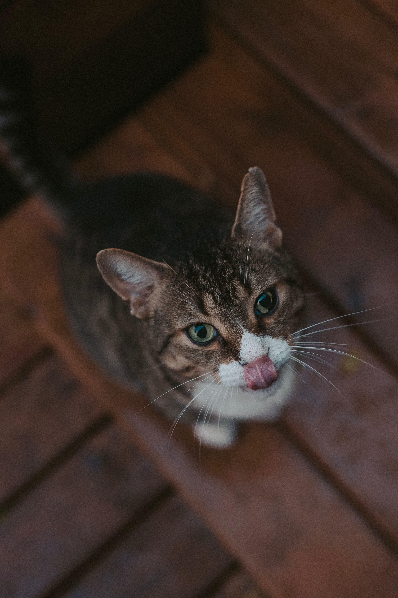

HTML이란 무엇인가?
hi hi hi hi hi hi hi creating web page
It says that "Policies on these demo Left 4 Dead dedicated L4D servers we host are enforced by clients and not by GameServers.com." 
But the gameserver website shows that my server is a "demo server."
Do you know why this is so? Why is my server written as a demo? I'm pretty sure I correctly made the payment, but it seems gameserver isn't paying much attention to the quality of my server
Or perhaps is it because set the server to operate for only a month?